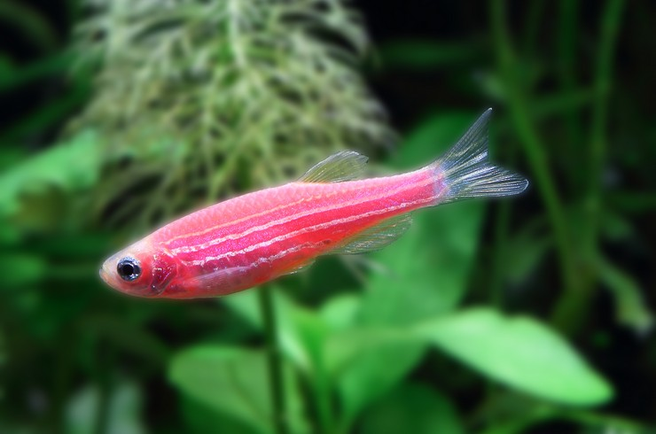
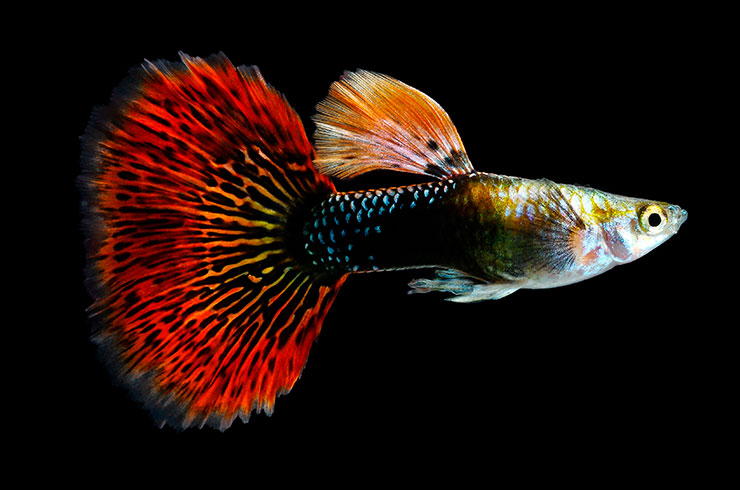

Півники
Півників можна зустріти в акваріумах любителів по всьому світу. Ця чудова рибка здатна вижити без подачі кисню, так як має спеціальний орган дихання - лабіринт, що дозволяє їй використовувати для дихання атмосферне повітря. Серед цікавих особливостей півників можна виділити посилену агресію самців один до одного. Зустріч двох дорослих представників даного виду неодмінно закінчиться бійкою. Тому утримувати разом 2 і більше чоловічих особин не рекомендується. Розмножуються рибки досить просто: самці будують особливе гніздо з пухирців, куди складають ікринки і піклуються про них, поки не з'являться мальки.
Скалярія

Скалярії - незвичайні рибки з річок Південної Америки. Їх відрізняє сплощене, практично трикутне тіло з сильно витягнутими плавниками. Розмір окремих особин може досягати 15 см, не рахуючи плавників. Плавають скалярії чинно і граційно. За це їх називають «риби-ангели». Будучи стайними в юному віці, дорослі скалярії воліють жити стійкими парами і можуть запросто забити інших родичів. Для утримання скалярій рекомендується акваріум від 100 літрів.
Даніо

Даніо - метушливі непосиди, які відмінно заповнять верхню частину акваріума. Яскраві і невибагливі, вони зайняли гідне місце в списку найбільш популярних акваріумних рибок. Утримувати даніо необхідно в стайках від шести особин. Залишившись на самоті, представники цього виду відчувають сильний стрес. Для утримання даніо не знадобиться акваріум великого обсягу. Даніо стали першими рибками, які отримали змінений генотип (GloFish), створювалися вони як індикатор забруднення водойм, а в результаті стали привабливими акваріумними мешканцями.
Гуппі

Гуппі, без сумніву, найкраща рибка для початківців акваріумістів. Вона невибаглива в догляді, про її витривалість навіть ходять легенди, не вимагає великих обсягів акваріума, добре уживається з багатьма декоративними видами. Додайте до цього величезну колірну розмаїтість і живородіння, завдяки якому отримати потомство гуппі в домашніх умовах простіше простого.
Гуппі дуже широко поширені по всьому світу. Загальна їх кількість настільки велика, що даному виду навіть присвоїли титул «рибка тисячоліття». Також гуппі надали неоціненну допомогу людству в боротьбі з поширенням малярії в тропічних регіонах планети, адже личинки комарів - улюблена їжа цих маленьких живородок.
Риба-клоун

Риби-клоуни, або амфіпріони - це морські риби, які часто стають першими жителями початківців морських акваріумів. Вони володіють яскравою зовнішністю, що легко запам'ятовується. Це рибки з насичено-помаранчевим або червоним забарвленням і характерними білими смугами на тілі.
Дуже цікавий союз цих морських мешканців і різних видів актиній. Отрута останніх не діє на клоунів, тому вони спокійно живуть і розмножуються серед щупалець. А ось бажаючому поласувати амфіпріонами доведеться несолодко, актинії завдадуть йому серйозні опіки своїми стрекальними клітинами. Зі свого боку, клоуни очищають щупальця кишковопорожнинних від залишків їжі, вентилюють простір між ними.
Для пари клоунів знадобиться акваріум від 50 літрів. З іншими морськими мешканцями уживаються добре.